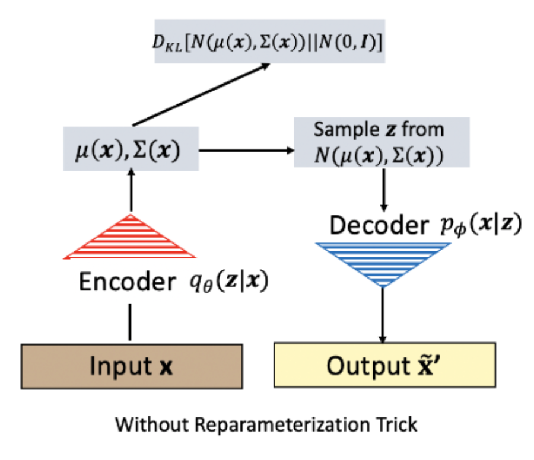
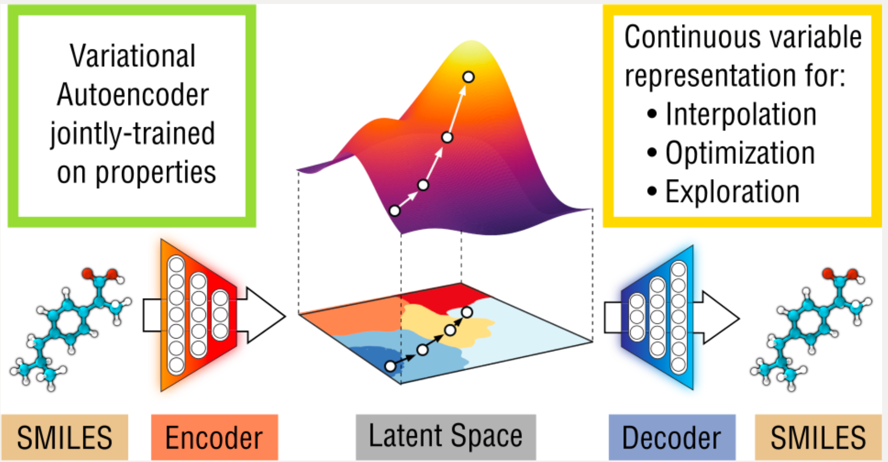

"The goal is not to generate any data, but to generate data that is indistinguishable from real patient records while revealing nothing about actual patients."
August 2026 · Giacomo Saccaggi
Healthcare data is among the most sensitive and valuable resources in machine learning. Electronic Health Records (EHRs) contain detailed information about diagnoses, treatments, lab results, and outcomes — exactly what we need to train predictive models. But there's a fundamental tension:
Generative models offer a solution: learn the underlying distribution of real patient data, then generate synthetic records that preserve statistical properties without exposing any individual patient.
Generative models learn to produce new samples from the data distribution
Before diving into specific architectures, let's understand the fundamental distinction between two paradigms in machine learning:
| Aspect | Discriminative Models | Generative Models |
|---|---|---|
| Goal | Learn decision boundary | Learn data distribution |
| Models | P(y|x) — label given features | P(x) or P(x,y) — joint distribution |
| Examples | Logistic regression, SVM, DNNs | GANs, VAEs, Normalizing Flows |
| Output | Class labels, predictions | New samples from learned distribution |
| Use case | Classification, regression | Data augmentation, synthesis, imputation |
Discriminative: Given a patient's features x, what is the probability of mortality?
P(mortality = 1 | diagnoses, labs, vitals)
Generative: What does a typical diabetic patient with heart failure look like?
P(diagnoses, labs, vitals | diabetes ∧ heart_failure)
Generative models are strictly more powerful — if you can model P(x,y), you can derive P(y|x) via Bayes' rule. But this power comes with complexity: modeling high-dimensional distributions is fundamentally harder than learning decision boundaries.
GANs, introduced by Goodfellow et al. in 2014, represent one of the most influential ideas in deep learning. The core insight is brilliant: instead of explicitly modeling the data distribution, pit two neural networks against each other in a game.
GAN architecture: Generator creates fake samples, Discriminator distinguishes real from fake
Generator G: Takes random noise z ~ P(z) and transforms it into fake samples G(z) that should look like real data. Think of it as a counterfeiter trying to produce convincing fake currency.
Discriminator D: Takes a sample (real or generated) and outputs the probability that it came from the real data distribution. Think of it as a detective trying to catch counterfeits.
The two networks play a minimax game with the following objective:
minG maxD V(D, G) = 𝔼x~pdata[log D(x)] + 𝔼z~pz[log(1 - D(G(z)))]
Discriminator's goal: Maximize V — correctly classify real samples as real (D(x)→1) and fake samples as fake (D(G(z))→0)
Generator's goal: Minimize V — fool the discriminator so D(G(z))→1
Training alternates between updating D and G:
# GAN Training Algorithm (simplified) for epoch in range(num_epochs): for real_batch in dataloader: # ============ Train Discriminator ============ # Goal: maximize log D(x) + log(1 - D(G(z))) # Sample random noise z = torch.randn(batch_size, latent_dim) # Generate fake samples fake_batch = G(z).detach() # detach to avoid backprop through G # Discriminator predictions real_pred = D(real_batch) fake_pred = D(fake_batch) # Discriminator loss: maximize log D(real) + log(1 - D(fake)) # Equivalent to minimize -log D(real) - log(1 - D(fake)) d_loss = -torch.mean(torch.log(real_pred)) - torch.mean(torch.log(1 - fake_pred)) d_optimizer.zero_grad() d_loss.backward() d_optimizer.step() # ============ Train Generator ============ # Goal: minimize log(1 - D(G(z))) ≈ maximize log D(G(z)) z = torch.randn(batch_size, latent_dim) fake_batch = G(z) fake_pred = D(fake_batch) # Generator loss: maximize log D(G(z)) # In practice, minimize -log D(G(z)) for better gradients g_loss = -torch.mean(torch.log(fake_pred)) g_optimizer.zero_grad() g_loss.backward() g_optimizer.step()
GAN training is notoriously unstable. Common issues:
Convergence is an open problem — there's no guarantee GANs reach equilibrium!
In the original formulation, G minimizes log(1 - D(G(z))). But when D is confident (D(G(z)) ≈ 0), this gradient vanishes. In practice, we use:
Original: minG log(1 - D(G(z))) — saturates when D is good
Practical: maxG log D(G(z)) — stronger gradients early in training
Both have the same fixed point, but the practical version has better gradient flow.
Standard GANs work well for continuous data like images, but EHR data is fundamentally different: it's discrete (binary diagnosis codes), multi-label (patients have multiple conditions), and high-dimensional (thousands of possible codes).
MedGAN (Choi et al., 2017) addresses these challenges by combining an autoencoder with a GAN, operating in a continuous latent space rather than directly on discrete codes.
MedGAN architecture: Autoencoder + GAN for discrete EHR generation
Why can't we use a standard GAN for binary medical codes?
MedGAN uses a two-stage approach:
| Component | Input | Output | Purpose |
|---|---|---|---|
| Encoder (Enc) | Binary codes x | Continuous h | Map discrete to continuous |
| Decoder (Dec) | Continuous h | Binary codes x̂ | Map continuous to discrete |
| Generator (G) | Noise z | Continuous h' | Generate in latent space |
| Discriminator (D) | Binary codes | Real/Fake prob | Distinguish real from fake |
Stage 1: Pre-train Autoencoder
Train Enc/Dec to reconstruct real patient records:
LAE = ||x - Dec(Enc(x))||²
This creates a smooth latent space where similar patients map to nearby points.
Stage 2: Train GAN in Latent Space
Generator produces latent codes, Decoder maps to discrete, Discriminator judges:
# MedGAN Training (Stage 2) for epoch in range(num_epochs): for real_x in dataloader: # ============ Train Discriminator ============ z = torch.randn(batch_size, noise_dim) # Generator produces latent representation fake_h = G(z) # Decoder maps to discrete codes fake_x = Dec(fake_h) # Discriminator sees discrete codes (real or fake) real_pred = D(real_x) fake_pred = D(fake_x.detach()) d_loss = bce_loss(real_pred, ones) + bce_loss(fake_pred, zeros) # ============ Train Generator ============ z = torch.randn(batch_size, noise_dim) fake_h = G(z) fake_x = Dec(fake_h) fake_pred = D(fake_x) g_loss = bce_loss(fake_pred, ones) # Fool discriminator
The key insight: once trained, the Generator + Decoder can produce unlimited synthetic patients without ever seeing real data again. The synthetic records:
How do we know synthetic data is "good"? MedGAN uses two complementary metrics:
Compare the frequency of each diagnosis code between real and synthetic data:
For each code j: |Preal(code_j = 1) - Psynthetic(code_j = 1)|
Lower is better — synthetic data should have similar disease prevalence.
Train a classifier on synthetic data, test on real data:
Higher is better — synthetic data should capture the same predictive relationships.
While GANs learn through adversarial training, Variational Autoencoders (Kingma & Welling, 2014) take a probabilistic approach. VAEs provide a principled framework for learning latent representations while enabling generation of new samples.
A standard autoencoder compresses input x to a latent code z, then reconstructs x̂:
Standard autoencoder: deterministic encoding creates discontinuous latent space
# Standard Autoencoder class Autoencoder(nn.Module): def __init__(self, input_dim, latent_dim): super().__init__() self.encoder = nn.Sequential( nn.Linear(input_dim, 256), nn.ReLU(), nn.Linear(256, latent_dim) # Deterministic z ) self.decoder = nn.Sequential( nn.Linear(latent_dim, 256), nn.ReLU(), nn.Linear(256, input_dim), nn.Sigmoid() ) def forward(self, x): z = self.encoder(x) # Encode to latent x_hat = self.decoder(z) # Reconstruct return x_hat
The problem: The latent space is not continuous or regularized. If we sample a random point z, the decoder may produce garbage — it's only trained to decode the specific z values produced by the encoder.
VAEs solve this by making the encoder output distribution parameters rather than deterministic points:
Instead of: z = Encoder(x)
VAE outputs: μ, σ² = Encoder(x)
Then samples: z ~ N(μ, σ²)
The latent code z is now a sample from a distribution, not a fixed point.

VAE: Encoder outputs distribution parameters, sample z from this distribution
There's a problem: we can't backpropagate through a sampling operation. The reparameterization trick makes this differentiable:
Original: z ~ N(μ, σ²) — sampling breaks gradient flow
Reparameterized: z = μ + σ · ε, where ε ~ N(0, 1)
The randomness is now external (ε), and z is a deterministic function of μ, σ, and ε.
Gradients can flow through μ and σ back to the encoder!
def reparameterize(mu, log_var): """ Reparameterization trick: z = mu + std * epsilon log_var used instead of var for numerical stability """ std = torch.exp(0.5 * log_var) # σ = exp(0.5 * log(σ²)) eps = torch.randn_like(std) # ε ~ N(0, 1) z = mu + std * eps # z = μ + σ * ε return z
The VAE loss has two components that work together:
L = -𝔼q(z|x)[log p(x|z)] + KL(q(z|x) || p(z))
Reconstruction Loss: -𝔼[log p(x|z)] — how well can we reconstruct x from z?
KL Divergence: KL(q(z|x) || p(z)) — how close is our learned distribution to the prior?
Reconstruction loss forces the model to preserve information about x in z.
KL divergence regularizes the latent space, pushing it toward a standard normal distribution N(0, I). This ensures:
For Gaussian distributions, the KL divergence has a closed form:
If q(z|x) = N(μ, σ²) and p(z) = N(0, 1):
KL(q||p) = -½ Σj (1 + log(σj²) - μj² - σj²)
This can be computed analytically — no sampling required!
def vae_loss(x, x_reconstructed, mu, log_var): """ VAE loss = Reconstruction + KL divergence """ # Reconstruction loss (binary cross-entropy for binary data) recon_loss = F.binary_cross_entropy(x_reconstructed, x, reduction='sum') # KL divergence: -0.5 * sum(1 + log(σ²) - μ² - σ²) kl_loss = -0.5 * torch.sum(1 + log_var - mu.pow(2) - log_var.exp()) return recon_loss + kl_loss
Once trained, generating new samples is simple:
# Generate new synthetic patient def generate_samples(decoder, num_samples, latent_dim): # Sample from prior: z ~ N(0, I) z = torch.randn(num_samples, latent_dim) # Decode to data space with torch.no_grad(): generated = decoder(z) return generated # Generate 100 synthetic patients synthetic_patients = generate_samples(vae.decoder, 100, latent_dim=64)
A key advantage of VAEs: the latent space is smooth and meaningful. We can interpolate between patients:
# Interpolate between two patients def interpolate(vae, x1, x2, steps=10): # Encode both patients mu1, _ = vae.encode(x1) mu2, _ = vae.encode(x2) # Linear interpolation in latent space interpolations = [] for alpha in np.linspace(0, 1, steps): z = (1 - alpha) * mu1 + alpha * mu2 x_interp = vae.decode(z) interpolations.append(x_interp) return interpolations # Result: smooth transition from patient 1's conditions to patient 2's
One of the most exciting applications of generative models in healthcare is de novo drug design: generating novel molecular structures with desired therapeutic properties.

VAE for molecule generation: encode molecular structure, manipulate in latent space, decode to novel molecules
Traditional drug discovery is slow and expensive:
Generative models can guide exploration by learning what makes molecules drug-like and generating candidates with desired properties.
Molecules can be represented in several ways:
| Representation | Example (Aspirin) | Pros/Cons |
|---|---|---|
| SMILES | CC(=O)OC1=CC=CC=C1C(=O)O | String format, easy to process; not unique |
| Molecular Graph | Nodes=atoms, edges=bonds | Preserves structure; requires GNNs |
| Fingerprints | Binary vector of substructures | Fixed size; loses some information |
The simplest approach encodes SMILES strings character-by-character:
# Character-level VAE for molecules class MoleculeVAE(nn.Module): def __init__(self, vocab_size, max_len, latent_dim, hidden_dim=256): super().__init__() # Encoder: SMILES → latent self.encoder = nn.GRU(vocab_size, hidden_dim, batch_first=True) self.fc_mu = nn.Linear(hidden_dim, latent_dim) self.fc_logvar = nn.Linear(hidden_dim, latent_dim) # Decoder: latent → SMILES self.fc_decode = nn.Linear(latent_dim, hidden_dim) self.decoder = nn.GRU(vocab_size, hidden_dim, batch_first=True) self.fc_out = nn.Linear(hidden_dim, vocab_size) self.max_len = max_len def encode(self, x): # x: one-hot encoded SMILES [batch, seq_len, vocab_size] _, h = self.encoder(x) h = h.squeeze(0) mu = self.fc_mu(h) logvar = self.fc_logvar(h) return mu, logvar def decode(self, z, max_len=None): # Autoregressive decoding max_len = max_len or self.max_len h = self.fc_decode(z).unsqueeze(0) # Start with start token outputs = [] # ... autoregressive generation ... return outputs
The real power: we can optimize molecular properties by moving in latent space:
This enables targeted generation of molecules with specific properties!
MolGAN (De Cao & Kipf, 2018) generates molecular graphs directly using a GAN with graph neural networks:
The reward network allows reinforcement learning to guide generation toward desired properties.
Both GANs and VAEs can generate synthetic data, but they have different strengths:
| Aspect | GAN | VAE |
|---|---|---|
| Sample Quality | Sharper, more realistic | Slightly blurrier |
| Training Stability | Difficult, mode collapse risk | Stable, well-defined loss |
| Latent Space | Not explicitly regularized | Smooth, interpretable |
| Mode Coverage | May miss modes (mode collapse) | Better coverage of distribution |
| Likelihood | Cannot compute P(x) | Provides lower bound on P(x) |
| Interpolation | Not guaranteed to work | Smooth interpolation |
| Attribute Control | Conditional GAN needed | Natural via latent manipulation |
Use GANs when:
Use VAEs when:
Let's build a complete VAE for generating synthetic patient records. We'll work with binary multi-hot encoded diagnoses — the same representation used in medical embeddings.
Each patient is represented as a binary vector where 1 indicates presence of a diagnosis code:
# Patient representation # Assume 1000 possible diagnosis codes # Patient with diabetes (idx 250), hypertension (idx 401), CKD (idx 585): # x = [0, 0, ..., 1, ..., 1, ..., 1, ..., 0] # 1s at indices 250, 401, 585 # ^250 ^401 ^585
import torch import torch.nn as nn import torch.nn.functional as F import numpy as np class EHR_VAE(nn.Module): """ Variational Autoencoder for binary EHR diagnosis codes. Input: Multi-hot encoded patient record [batch_size, num_codes] Output: Reconstructed record + latent parameters (mu, log_var) """ def __init__(self, num_codes, hidden_dims=[512, 256], latent_dim=64): super().__init__() self.num_codes = num_codes self.latent_dim = latent_dim # ============ Encoder ============ encoder_layers = [] prev_dim = num_codes for hidden_dim in hidden_dims: encoder_layers.extend([ nn.Linear(prev_dim, hidden_dim), nn.BatchNorm1d(hidden_dim), nn.ReLU(), nn.Dropout(0.2) ]) prev_dim = hidden_dim self.encoder = nn.Sequential(*encoder_layers) # Latent space parameters self.fc_mu = nn.Linear(hidden_dims[-1], latent_dim) self.fc_logvar = nn.Linear(hidden_dims[-1], latent_dim) # ============ Decoder ============ decoder_layers = [] decoder_dims = [latent_dim] + hidden_dims[::-1] # Reverse hidden dims for i in range(len(decoder_dims) - 1): decoder_layers.extend([ nn.Linear(decoder_dims[i], decoder_dims[i+1]), nn.BatchNorm1d(decoder_dims[i+1]), nn.ReLU(), nn.Dropout(0.2) ]) # Output layer decoder_layers.append(nn.Linear(decoder_dims[-1], num_codes)) decoder_layers.append(nn.Sigmoid()) # Binary output self.decoder = nn.Sequential(*decoder_layers) def encode(self, x): """Encode input to latent distribution parameters.""" h = self.encoder(x) mu = self.fc_mu(h) logvar = self.fc_logvar(h) return mu, logvar def reparameterize(self, mu, logvar): """Reparameterization trick: z = mu + std * epsilon""" std = torch.exp(0.5 * logvar) eps = torch.randn_like(std) return mu + std * eps def decode(self, z): """Decode latent vector to reconstructed input.""" return self.decoder(z) def forward(self, x): """Full forward pass: encode, sample, decode.""" mu, logvar = self.encode(x) z = self.reparameterize(mu, logvar) x_recon = self.decode(z) return x_recon, mu, logvar def generate(self, num_samples): """Generate new synthetic patients.""" with torch.no_grad(): # Sample from prior N(0, I) z = torch.randn(num_samples, self.latent_dim) samples = self.decode(z) return samples # Initialize model num_codes = 1000 # Vocabulary of diagnosis codes vae = EHR_VAE(num_codes=num_codes, hidden_dims=[512, 256], latent_dim=64) print(vae)
# Model architecture: # EHR_VAE( # (encoder): Sequential( # (0): Linear(in_features=1000, out_features=512) # (1): BatchNorm1d(512) # (2): ReLU() # (3): Dropout(p=0.2) # (4): Linear(in_features=512, out_features=256) # (5): BatchNorm1d(256) # (6): ReLU() # (7): Dropout(p=0.2) # ) # (fc_mu): Linear(in_features=256, out_features=64) # (fc_logvar): Linear(in_features=256, out_features=64) # (decoder): Sequential(...) # )
def vae_loss_function(x_recon, x, mu, logvar, beta=1.0): """ VAE loss = Reconstruction + β * KL divergence Args: x_recon: Reconstructed input [batch, num_codes] x: Original input [batch, num_codes] mu: Latent mean [batch, latent_dim] logvar: Latent log variance [batch, latent_dim] beta: Weight for KL term (β-VAE) Returns: total_loss, recon_loss, kl_loss """ # Reconstruction loss: Binary Cross Entropy # Sum over codes, mean over batch recon_loss = F.binary_cross_entropy(x_recon, x, reduction='none') recon_loss = recon_loss.sum(dim=1).mean() # KL divergence: -0.5 * sum(1 + log(σ²) - μ² - σ²) kl_loss = -0.5 * torch.sum(1 + logvar - mu.pow(2) - logvar.exp(), dim=1) kl_loss = kl_loss.mean() # Total loss total_loss = recon_loss + beta * kl_loss return total_loss, recon_loss, kl_loss
from torch.utils.data import DataLoader, TensorDataset import torch.optim as optim def train_vae(vae, train_data, num_epochs=50, batch_size=64, lr=1e-3, beta=1.0): """ Train VAE on binary EHR data. Args: vae: EHR_VAE model train_data: numpy array [num_patients, num_codes] num_epochs: Training epochs batch_size: Batch size lr: Learning rate beta: KL weight (use β < 1 for better reconstruction) """ device = torch.device("cuda" if torch.cuda.is_available() else "cpu") vae = vae.to(device) # Create DataLoader dataset = TensorDataset(torch.tensor(train_data, dtype=torch.float32)) dataloader = DataLoader(dataset, batch_size=batch_size, shuffle=True) optimizer = optim.Adam(vae.parameters(), lr=lr) history = {'total_loss': [], 'recon_loss': [], 'kl_loss': []} for epoch in range(num_epochs): vae.train() epoch_total, epoch_recon, epoch_kl = 0, 0, 0 for batch in dataloader: x = batch[0].to(device) optimizer.zero_grad() # Forward pass x_recon, mu, logvar = vae(x) # Compute loss total_loss, recon_loss, kl_loss = vae_loss_function( x_recon, x, mu, logvar, beta=beta ) # Backward pass total_loss.backward() optimizer.step() epoch_total += total_loss.item() epoch_recon += recon_loss.item() epoch_kl += kl_loss.item() # Record history n_batches = len(dataloader) history['total_loss'].append(epoch_total / n_batches) history['recon_loss'].append(epoch_recon / n_batches) history['kl_loss'].append(epoch_kl / n_batches) if (epoch + 1) % 10 == 0: print(f"Epoch {epoch+1:3d} | Total: {history['total_loss'][-1]:.2f} | " f"Recon: {history['recon_loss'][-1]:.2f} | KL: {history['kl_loss'][-1]:.2f}") return history # Train the model # history = train_vae(vae, train_data, num_epochs=50, beta=0.5)
# Sample output: # Epoch 10 | Total: 142.35 | Recon: 138.42 | KL: 7.86 # Epoch 20 | Total: 98.23 | Recon: 91.18 | KL: 14.10 # Epoch 30 | Total: 76.45 | Recon: 67.32 | KL: 18.26 # Epoch 40 | Total: 64.12 | Recon: 53.89 | KL: 20.46 # Epoch 50 | Total: 58.34 | Recon: 47.21 | KL: 22.26
def generate_synthetic_patients(vae, num_patients, threshold=0.5): """ Generate synthetic patient records. Args: vae: Trained VAE model num_patients: Number of synthetic patients to generate threshold: Probability threshold for binary codes Returns: Binary array of synthetic patients [num_patients, num_codes] """ vae.eval() with torch.no_grad(): # Sample from prior z = torch.randn(num_patients, vae.latent_dim) # Decode to probabilities probs = vae.decode(z) # Threshold to binary synthetic = (probs > threshold).float().numpy() return synthetic # Generate 1000 synthetic patients # synthetic_patients = generate_synthetic_patients(vae, 1000) # print(f"Generated {synthetic_patients.shape[0]} synthetic patients") # print(f"Average codes per patient: {synthetic_patients.sum(axis=1).mean():.1f}")
def evaluate_synthetic_quality(real_data, synthetic_data): """ Evaluate quality of synthetic data. Metrics: 1. Dimension-wise probability difference 2. Average codes per patient 3. Code co-occurrence similarity """ results = {} # 1. Dimension-wise probability (code prevalence) real_prevalence = real_data.mean(axis=0) synth_prevalence = synthetic_data.mean(axis=0) # Mean absolute difference prevalence_diff = np.abs(real_prevalence - synth_prevalence).mean() results['prevalence_MAE'] = prevalence_diff # Correlation of prevalences prevalence_corr = np.corrcoef(real_prevalence, synth_prevalence)[0, 1] results['prevalence_corr'] = prevalence_corr # 2. Average codes per patient real_avg_codes = real_data.sum(axis=1).mean() synth_avg_codes = synthetic_data.sum(axis=1).mean() results['real_avg_codes'] = real_avg_codes results['synth_avg_codes'] = synth_avg_codes # 3. Code co-occurrence (correlation matrix) # Select top 50 most common codes for efficiency top_codes = np.argsort(real_prevalence)[-50:] real_cooc = np.corrcoef(real_data[:, top_codes].T) synth_cooc = np.corrcoef(synthetic_data[:, top_codes].T) # Frobenius norm of difference cooc_diff = np.linalg.norm(real_cooc - synth_cooc, 'fro') results['cooccurrence_diff'] = cooc_diff return results # Example evaluation output: # {'prevalence_MAE': 0.0234, # 'prevalence_corr': 0.9812, # 'real_avg_codes': 8.3, # 'synth_avg_codes': 7.9, # 'cooccurrence_diff': 2.45}
Now let's implement a basic GAN for generating tabular medical data. This is simpler than MedGAN but illustrates the core concepts.
class Generator(nn.Module): """ Generator network: transforms random noise into fake patient records. """ def __init__(self, noise_dim, output_dim, hidden_dims=[256, 512, 256]): super().__init__() layers = [] prev_dim = noise_dim for hidden_dim in hidden_dims: layers.extend([ nn.Linear(prev_dim, hidden_dim), nn.BatchNorm1d(hidden_dim), nn.LeakyReLU(0.2), ]) prev_dim = hidden_dim # Output layer with sigmoid for binary codes layers.append(nn.Linear(prev_dim, output_dim)) layers.append(nn.Sigmoid()) self.model = nn.Sequential(*layers) def forward(self, z): return self.model(z) class Discriminator(nn.Module): """ Discriminator network: classifies inputs as real or fake. """ def __init__(self, input_dim, hidden_dims=[256, 128, 64]): super().__init__() layers = [] prev_dim = input_dim for hidden_dim in hidden_dims: layers.extend([ nn.Linear(prev_dim, hidden_dim), nn.LeakyReLU(0.2), nn.Dropout(0.3), ]) prev_dim = hidden_dim # Output: probability that input is real layers.append(nn.Linear(prev_dim, 1)) layers.append(nn.Sigmoid()) self.model = nn.Sequential(*layers) def forward(self, x): return self.model(x) # Initialize networks noise_dim = 128 num_codes = 1000 generator = Generator(noise_dim=noise_dim, output_dim=num_codes) discriminator = Discriminator(input_dim=num_codes)
def train_gan(generator, discriminator, train_data, num_epochs=100, batch_size=64, noise_dim=128, lr_g=2e-4, lr_d=2e-4): """ Train GAN on binary EHR data. Uses Binary Cross Entropy loss with alternating G/D updates. """ device = torch.device("cuda" if torch.cuda.is_available() else "cpu") generator = generator.to(device) discriminator = discriminator.to(device) # Optimizers optimizer_G = optim.Adam(generator.parameters(), lr=lr_g, betas=(0.5, 0.999)) optimizer_D = optim.Adam(discriminator.parameters(), lr=lr_d, betas=(0.5, 0.999)) # Loss function criterion = nn.BCELoss() # Data loader dataset = TensorDataset(torch.tensor(train_data, dtype=torch.float32)) dataloader = DataLoader(dataset, batch_size=batch_size, shuffle=True) history = {'d_loss': [], 'g_loss': [], 'd_real': [], 'd_fake': []} for epoch in range(num_epochs): epoch_d_loss, epoch_g_loss = 0, 0 epoch_d_real, epoch_d_fake = 0, 0 for batch in dataloader: real_data = batch[0].to(device) batch_size_actual = real_data.size(0) # Labels real_labels = torch.ones(batch_size_actual, 1).to(device) fake_labels = torch.zeros(batch_size_actual, 1).to(device) # ============ Train Discriminator ============ optimizer_D.zero_grad() # Real data real_pred = discriminator(real_data) d_loss_real = criterion(real_pred, real_labels) # Fake data noise = torch.randn(batch_size_actual, noise_dim).to(device) fake_data = generator(noise).detach() fake_pred = discriminator(fake_data) d_loss_fake = criterion(fake_pred, fake_labels) # Combined discriminator loss d_loss = d_loss_real + d_loss_fake d_loss.backward() optimizer_D.step() # ============ Train Generator ============ optimizer_G.zero_grad() noise = torch.randn(batch_size_actual, noise_dim).to(device) fake_data = generator(noise) fake_pred = discriminator(fake_data) # Generator wants discriminator to think fake is real g_loss = criterion(fake_pred, real_labels) g_loss.backward() optimizer_G.step() # Track metrics epoch_d_loss += d_loss.item() epoch_g_loss += g_loss.item() epoch_d_real += real_pred.mean().item() epoch_d_fake += fake_pred.mean().item() # Record history n_batches = len(dataloader) history['d_loss'].append(epoch_d_loss / n_batches) history['g_loss'].append(epoch_g_loss / n_batches) history['d_real'].append(epoch_d_real / n_batches) history['d_fake'].append(epoch_d_fake / n_batches) if (epoch + 1) % 20 == 0: print(f"Epoch {epoch+1:3d} | D_loss: {history['d_loss'][-1]:.3f} | " f"G_loss: {history['g_loss'][-1]:.3f} | " f"D(real): {history['d_real'][-1]:.3f} | " f"D(fake): {history['d_fake'][-1]:.3f}") return history # Train GAN # history = train_gan(generator, discriminator, train_data, num_epochs=100)
# Sample output: # Epoch 20 | D_loss: 1.245 | G_loss: 0.823 | D(real): 0.712 | D(fake): 0.341 # Epoch 40 | D_loss: 1.189 | G_loss: 0.891 | D(real): 0.683 | D(fake): 0.398 # Epoch 60 | D_loss: 1.156 | G_loss: 0.934 | D(real): 0.654 | D(fake): 0.421 # Epoch 80 | D_loss: 1.134 | G_loss: 0.967 | D(real): 0.632 | D(fake): 0.445 # Epoch 100 | D_loss: 1.112 | G_loss: 0.989 | D(real): 0.612 | D(fake): 0.468
def generate_from_gan(generator, num_samples, noise_dim, threshold=0.5): """Generate synthetic patients using trained generator.""" generator.eval() with torch.no_grad(): noise = torch.randn(num_samples, noise_dim) probs = generator(noise) synthetic = (probs > threshold).float().numpy() return synthetic # Generate and compare distributions # synthetic_gan = generate_from_gan(generator, 1000, noise_dim) # quality_metrics = evaluate_synthetic_quality(real_data, synthetic_gan)
We covered the theory and implementation of generative models for healthcare:
| Model | Key Idea | Strengths | Healthcare Applications |
|---|---|---|---|
| GAN | Adversarial training: Generator vs Discriminator | Sharp, realistic samples | Medical imaging, synthetic EHR |
| MedGAN | Autoencoder + GAN for discrete codes | Handles binary multi-label data | Privacy-preserving EHR generation |
| VAE | Probabilistic encoder, regularized latent space | Stable training, interpretable latent space | Patient representation, interpolation |
| MolVAE/MolGAN | Generate molecular structures | Property optimization in latent space | Drug discovery, lead optimization |